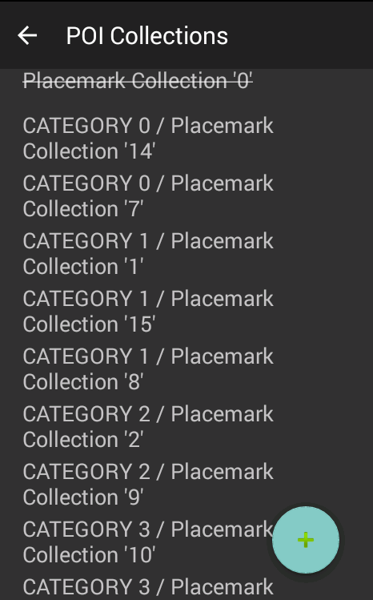
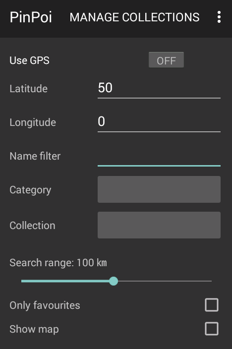

PinPoi
PinPoi
PinPoi imports thousand points of interest for your gps navigator.
You can import Google KML and KMZ, TomTom OV2, simple GeoRSS, Garmin GPX, Navigon ASC, CSV and zipped collections directly into your phone and organize them in collections.
PinPoi searches using your gps position or a custom location, you can choose your destination from a map and open it with your preferred app.

PinPoi is free,
really!
Enjoy.
Download
![F-Droid link]() Download and install APK https://f-droid.org/repository/browse/?fdid=io.github.fvasco.pinpoi
Download and install APK https://f-droid.org/repository/browse/?fdid=io.github.fvasco.pinpoi
Instructions
To search in POI collection you need to define and import it.
POI collections
To define new collection tap "Manage collections" in main screen, then tap the button on bottom right.

A POI collection has a unique name and a data source.
To define a data source you can write a remote URL or use search button to find a local file.
To import a data source tap the button, warning: remote URL requires data connection.
You can optionally write a collection description and define a collection group.
Collections group are useful to limit POI search.
POI search
Main page is focused on search.
There are following fields:
- GPS button turns GPS on and off.
- Search address button allows address search to fill coordinates.
- Latitude and longitude fields are required for POI search, there represent the center of search (ex: latitude 50, longitude 10)
- Name filter field is a custom filter to POI name, if empty no filter applied.
- Category filter limits search to all POI in a collection's category.
- Collection filter limits search to all POI in a collection.
- Search range limits the range of POI search in kilometers
- Only favourite check limit search to favourite POI
- Show map check shows result in a map (require internet connection), otherwise result are displayed in a list.
Search results are displayed in list, each item contains a distance to location, azimuth and POI name.
A short tap on item opens a POI details, long tap opens map app.
Map displays POIs numbered by distance, tap on it opens details.
Big red circe is search limit, orange circle is half search limit.
POI detail show a POI name, description, location and infos about its collection.
You can write a note and set it as preferred using a star button on top right.
Tap on map button on bottom left open a your map app, long tap open a app chooser.
Do you like PinPoi or wish a better one?
Offer me a fruit juice ;)